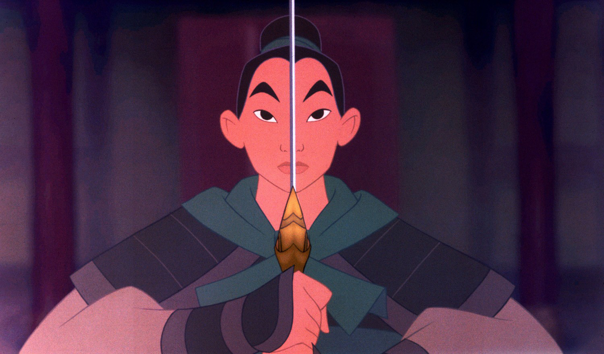

About Mulan
Mulan is a bad ass warrior! She protected her family by going to war in place of her dad. To do so, she had to disguise herslef as a man. She became one of the best figthers and ended up saving all of China!
Mulan going into battle
Mulan's Characteristics
- She's friends with a dragon
- Her anscestor's are watching over her
- She's brave and selfless
Mulan's Friends
Mulan has some awesome friends. Her best freind is Mushu. He's a dragon! Click on the links below to read more about them: